Overview
ZenVR began as my Master's thesis project in Georgia Tech's MS-HCI program. The challenge was to translate meditation instruction into a VR learning system that could meaningfully support novice practice over time. This page focuses on the research and design process that established the conceptual and experiential foundation for everything the startup later became.
The project followed a full research-to-design-to-evaluation arc: formative research, synthesis into a curriculum and prototype, heuristic evaluation, a six-week longitudinal study with 150 visits, and final data synthesis that culminated in a peer-reviewed CHI publication in 2022.
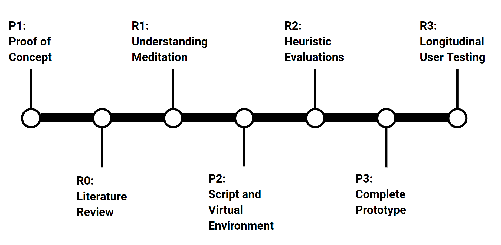
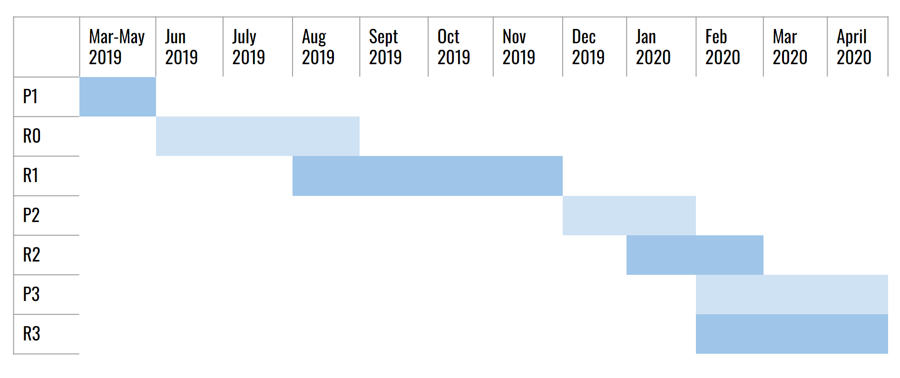
Overview of the thesis process and project timeline.
The Master's Thesis Project
This thesis asked a difficult design question: how can meditation, which is often taught through subtle, embodied guidance from a teacher, be translated into a VR learning experience for novices? Rather than treating VR as a relaxation gimmick, the project explored whether it could function as a structured training medium for building foundational meditation skills.
That framing shaped the work from the start. ZenVR was designed not just as a calming environment, but as a guided learning system - one grounded in formative research, tested through longitudinal use, and ultimately formalized through peer-reviewed publication.
Formative Research
To inform ZenVR's initial design, we studied meditation teachers, expert practitioners, and novices to understand how beginners learn, where they struggle, and what kinds of support real instructors use to help them progress.
The research produced a substantial body of qualitative and quantitative findings, which we translated into ZenVR’s curriculum, prototype design, and overall learning framework.
My Contribution
I co-developed the interview and survey instruments, conducted semi-structured interviews across participant groups, and played a major role in synthesis. That included extensive affinity mapping and translating findings into design implications, sketches, and curriculum structure.
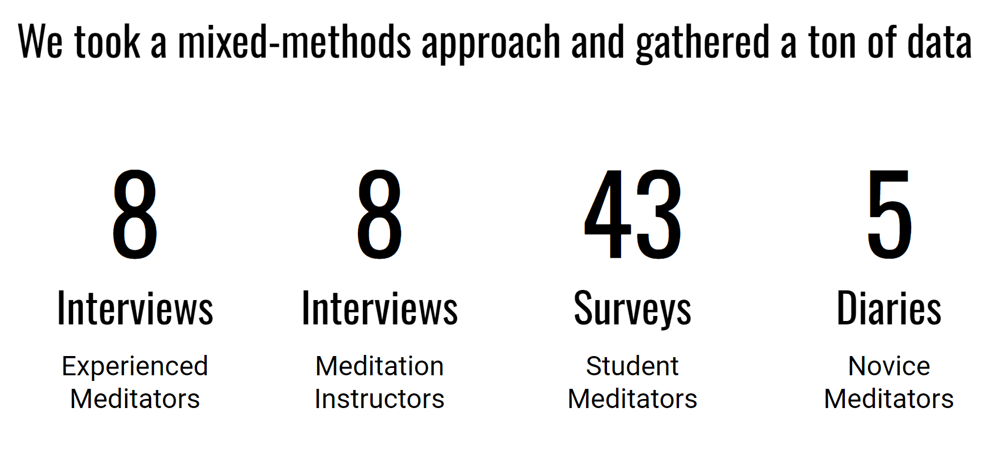
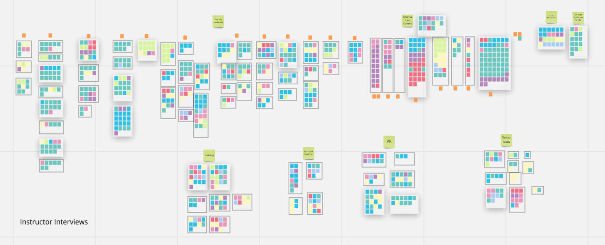
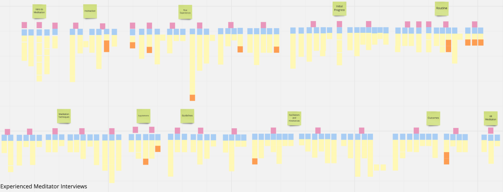
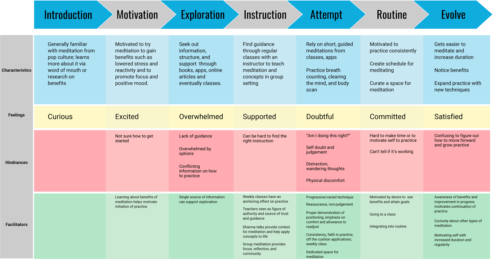
The work began with rich mixed-methods research and affinity mapping, then evolved into clearer digital synthesis and learner journey framing.
Design and Prototyping
Using the findings from formative research, we translated the needs of novice meditators into a functional VR learning prototype. Rather than designing ZenVR as a passive relaxation experience, we structured it as a guided training system: eight meditation lessons with scripted instruction, supportive audio, and immersive cues intended to help users build foundational meditation skills over time. The prototype was designed to make abstract aspects of meditation feel more approachable, teachable, and engaging for beginners.
My Contribution
I authored the lesson scripts, voiced and edited the audio, and built the Unity-based VR prototype. That included constructing the environment, integrating VR interaction, and assembling each lesson with motion-capture animation and supporting effects.
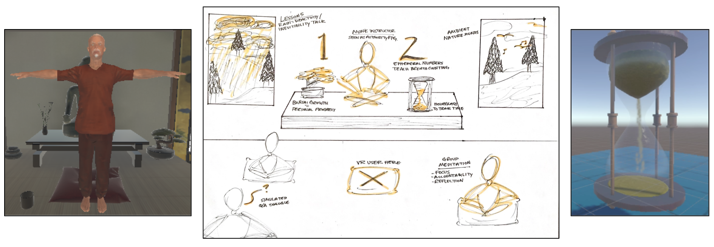
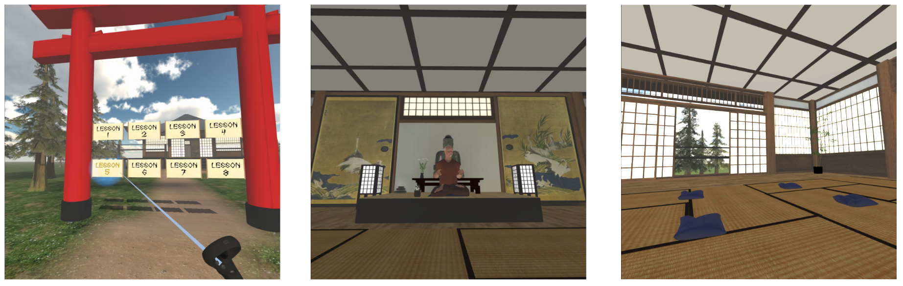
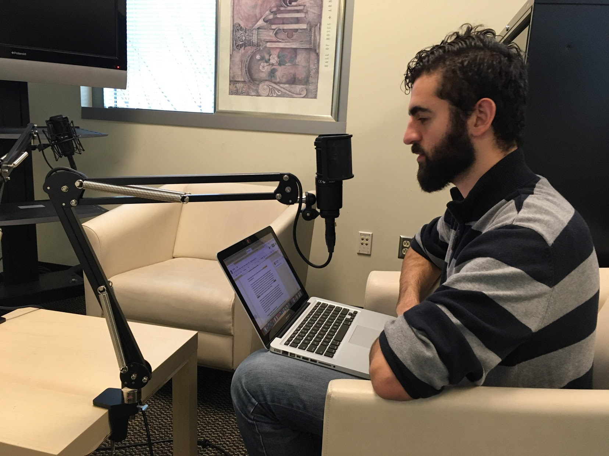
Prototype Evaluation
We used heuristic evaluations with meditation and VR experts to identify issues in usability, instructional flow, and content framing before beginning the longitudinal study. That feedback helped us refine the first prototype and better prepare it for repeated use over time.
We then ran a six-week longitudinal study with 15 participants attending two sessions per week, for a total of 150 visits. Because participants moved through the lessons over time, the study created an unusually fast feedback loop: insights from earlier sessions could be incorporated into later ones, allowing us to actively refine the evolving prototype while also evaluating the broader learning experience.
My Contribution
I designed the heuristic evaluation metrics, administered the expert reviews, facilitated about half of the study visits, and helped carry feedback from earlier sessions into later lesson revisions.
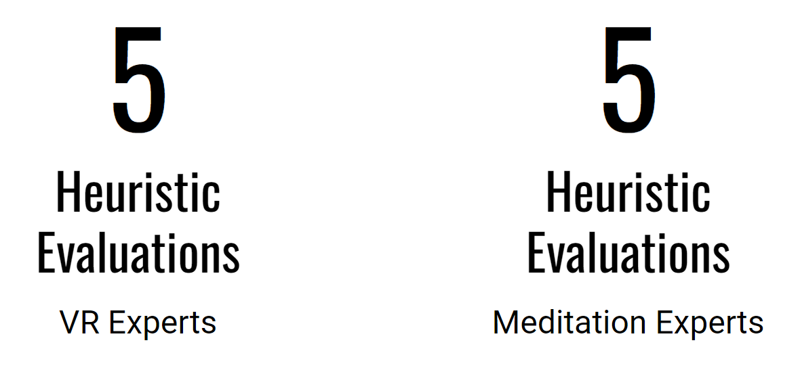
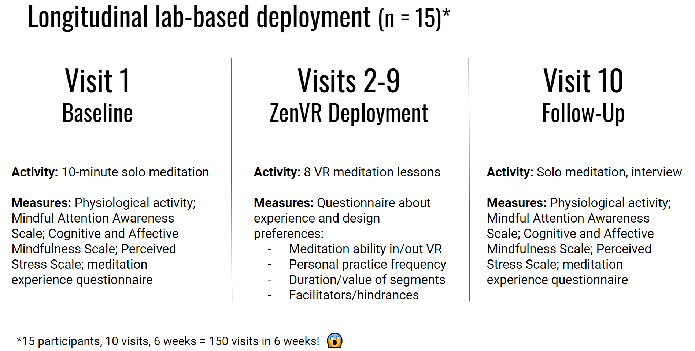
Study Outcomes
- 15 novice learners over 6 weeks
- 150 total study visits with no attrition
- Statistically significant improvements in mindfulness
- Statistically significant improvements in self-reported meditation ability
- All participants practiced between visits, and 13 of 15 were still meditating independently at follow-up
Data Synthesis
The final phase of the project focused on synthesizing qualitative and quantitative findings from 150 study visits into clear design and research conclusions. This meant identifying patterns in how participants learned, where the prototype was most effective, and which parts of the experience needed refinement, then translating those insights into both a final presentation and the CHI 2022 paper. The synthesis work also helped define which aspects of ZenVR were strong enough to carry forward into future product development.
My Contribution
I played a major role in the final synthesis, spending dozens of hours organizing qualitative data into large digital affinity maps and drawing conclusions section by section. I also helped shape the final presentation and contributed to writing the CHI 2022 paper.


The final synthesis connected the qualitative story, the quantitative outcomes, and the academic publication that formalized the work.
Publication and Featured Coverage
The project culminated in a peer-reviewed CHI 2022 publication, which formalized the research contribution behind ZenVR and positioned the work within broader HCI conversations around technology-supported meditation, learning, and wellbeing.
Featured video and article by Georgia Tech.
This thesis page captures the research origin of ZenVR: the thesis framing, the design process, the evaluation cycle, and the publication work that established the project's credibility and future trajectory. The startup page picks up where this one leaves off, following how those foundations became a real product and company.